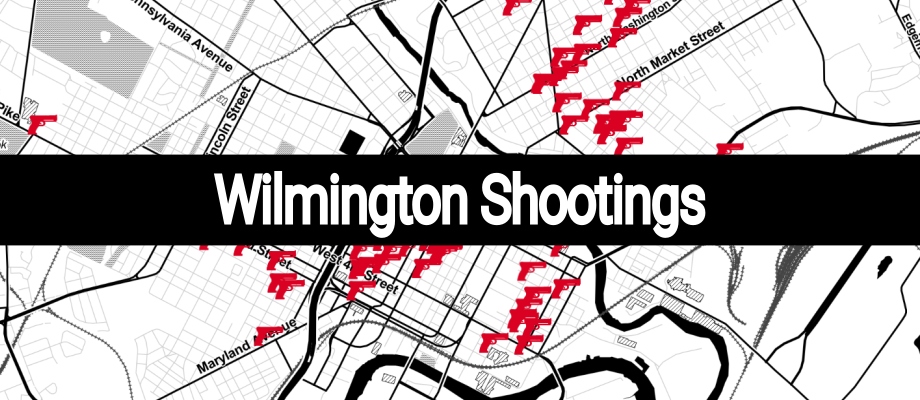

webd
A Python package for developing and optimally deploying HTML
A Python package for developing and optimally deploying HTML

Wilmington Shootings
A web app visualizing data on the shootings that have occurred in Wilmington, DE
A web app visualizing data on the shootings that have occurred in Wilmington, DE